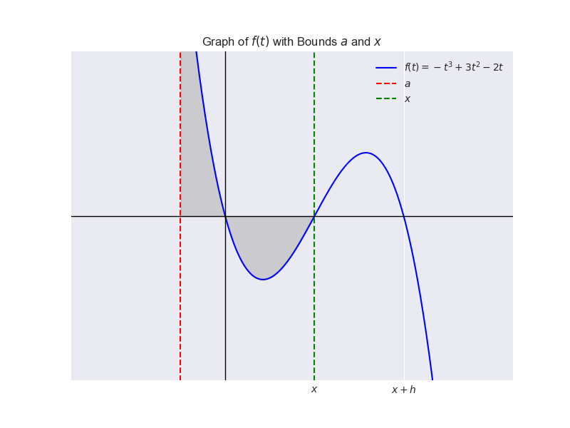
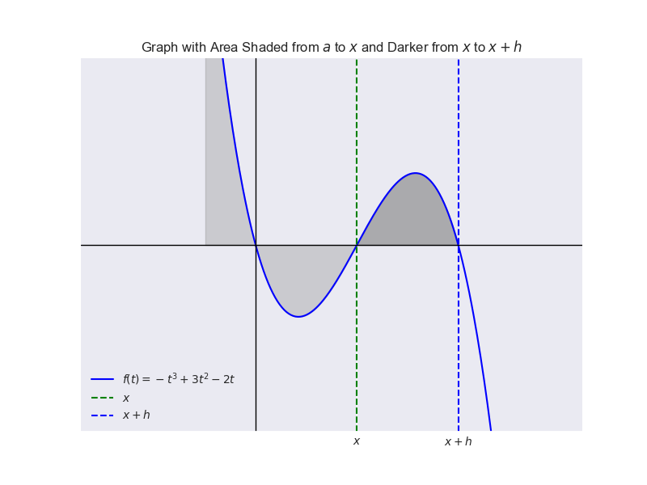
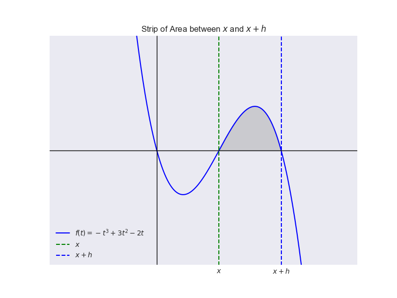
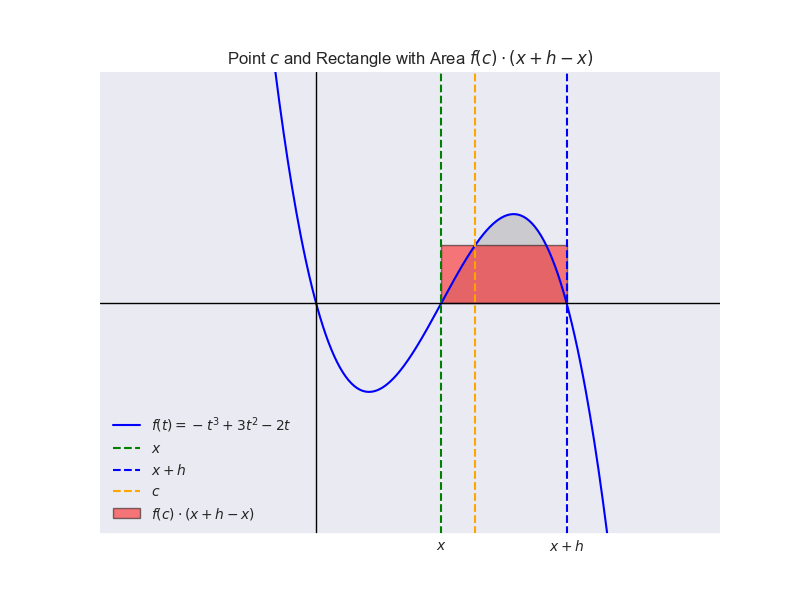
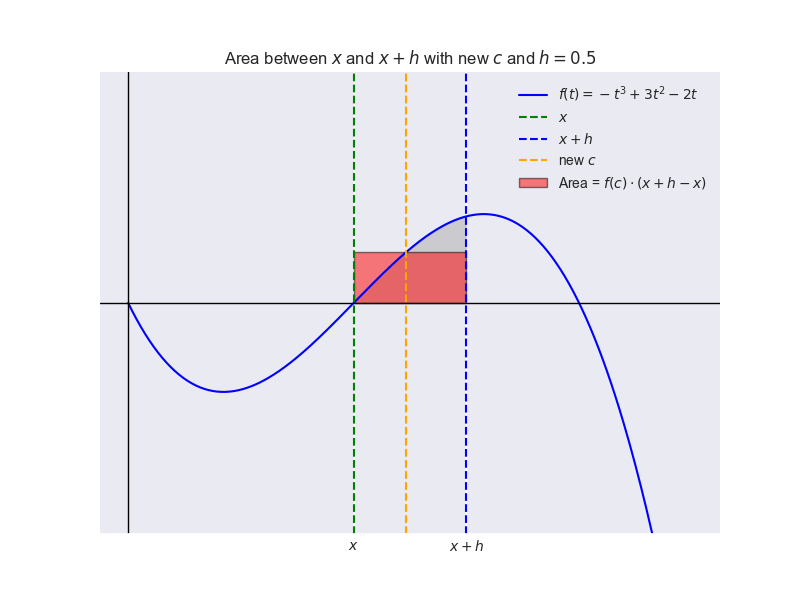

Define the function \( F(x) \) as follows:
Here is a graph of an arbitrary cubic function with bounds of integration \( a \) and \( x \):
To find the derivative of \( F \), we use the definition of the derivative:
The graph of the function with the area shaded in until \( x + h \) is shown below:
Subtract \( F(x) \) from \( F(x + h) \):
Here is a graph showing the strip of area between \( x \) and \( x + h \):
We need to analyze the behavior of this quotient as \( h \) approaches 0. The Mean Value Theorem for integrals states that, given that a function is continuous, the average value of the function over a region equals the integral between the bounds divided by the length of the region, and that there is some point \( c \) between the bounds such that:
Rearranging the terms and simplifying, we get:
where \( c \) is some point in \([x, x + h]\). Here is a graph illustrating the point \( c \) where the area of the rectangle \( f(c) \cdot (x + h - x) \) equals the area under the curve:
This is not specific to the image above. for all values of \( h \), there is some \( c \) between \( x \) and \( x+h \) that satisfies the Mean Value Theorem.
As \( h \) approaches 0, \( c \) approaches \( x \). Therefore:
Combining all the steps, we get:
Thus, we have proven that the derivative of the function \( F(x) \) is \( f(x) \), confirming one part of the Fundamental Theorem of Calculus.